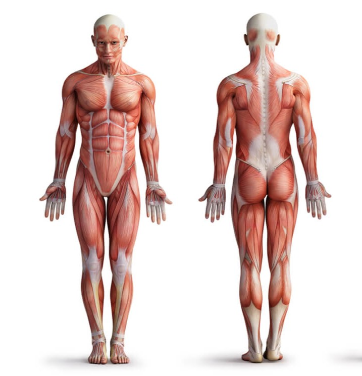

Les bases de la musculation
1. La longévité
La prise de muscle est un processus long, il est donc important de pratiquer la musculation sur plusieurs années afin de voir des résultats significatifs. Pour durer dans le temps votre entrainement devra répondre à deux conditions :
La sécurité
On ne peut plus prendre de muscle une fois blessé! Afin de s'entrainer en sécurité il faut s'échauffer et prendre des semaines de décharge toutes les 4 à 8 semaines.
Le plaisir
La discipline ne fait pas tout, pour ne pas abandonner il faut trouver du plaisir dans ses entrainements. Cela peut passer par la sélection d'exercice ou par les premiers résultats.
Pour aller plus loin
2. L'intensité
Afin de provoquer la croissance musculaire, il faut appliquer une contrainte mécanique suffisante sur les muscles afin qu'ils s'y adaptent.
L'échec musculaire
Pour que les muscles aient besoin de s'adapter, il faut que vos séries de travail se rapprochent de l'échec musculaire. Il n'est pas utile, voir même dangereux sur le long termes de l'atteindre à chaque série, mais il est crucial d'être à moins de 3 répétitions en réserve.
La surcharge progressive
Au fur et à mesure que vous progresserez, la charge nécessaire pour atteindre l'échec augmentera. Vous devez donc augmenter à chaque scéance, la charge de travail, le nombre de répétitions ou encore le nombre de séries afin de restez proche de l'échec musculaire et de forcer vos muscles à s'adapter, on parle de surcharge progressive.
Pour aller plus loin
3. Le volume d'entrainement
Une fois que votre entrainement est viable sur le long termes et que vous y mettez assez d'intensité, il faut aussi assez de volume d'entrainement afin se stimuler suffisamment vos muscles.
Combien de séries ?
Pour chaque groupe musculaire, il est idéal de faire entre 10 et 20 séries par semaines. Il est cependant inutile voir même contreproductif de faire plus de 6 séries pour un même groupe musculaire en une seule scéance.
Combien de répétitions ?
Notez que peut importe le nombre de répétitions, l'efficacité d'une série pour la croissance musculaire se mesure par rapport à sa distance à l'échec musculaire. Cependant, les séries courtes (de moins de 5 répétitions) engendrent beaucoup de fatigue musculaire, donc pas idéal sur le long termes, tandis que les séries longues (plus de 15 répétitions) prennent beaucoup de temps pour la même croissance musculaire. Ainsi, les séries de 5 à 15 répétitions sont un intervale pratique, les séries longues et courtes pouvant être utilisées occasionellement.
Pour aller plus loin
Anatomie et Exercices
Cliquez sur un muscle pour savoir comment le développer!
